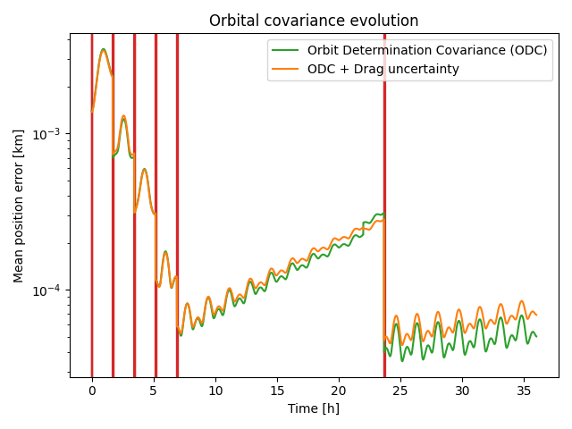

Note
Click here to download the full example code
Visualizing evolution of orbital errors¶

Out:
Orbit:
a : 7.2000e+06 x : -1.3110e+06
e : 1.0000e-02 y : 2.5142e+06
i : 7.5000e+01 z : 6.5932e+06
omega: 0.0000e+00 vx: -1.9534e+03
Omega: 7.9000e+01 vy: -6.8295e+03
anom : 7.2000e+01 vz: 2.2929e+03
Temporal points: 8640
--------------------------------------- Performance analysis --------------------------------------
Name | Executions | Mean time | Total time
--------------------------------------------------------+--------------+---------------+--------------
Obs.Param.:calculate_observation:get_state | 168 | 1.58518e-02 s | 1.22 %
Obs.Param.:calculate_observation:enus,range,range_rate | 168 | 3.50805e-04 s | 0.03 %
Obs.Param.:calculate_observation:snr-step:gain | 225 | 4.85656e-03 s | 0.50 %
Obs.Param.:calculate_observation:snr-step:snr | 225 | 2.80518e-05 s | 0.00 %
Obs.Param.:calculate_observation:snr-step | 225 | 4.90621e-03 s | 0.50 %
Obs.Param.:calculate_observation:generator | 168 | 7.27969e-03 s | 0.56 %
Obs.Param.:calculate_observation | 168 | 2.35461e-02 s | 1.81 %
Obs.Param.:calculate_observation_jacobian:reference | 21 | 7.49092e-02 s | 0.72 %
Obs.Param.:calculate_observation_jacobian:d_x | 21 | 1.71727e-02 s | 0.16 %
Obs.Param.:calculate_observation_jacobian:d_y | 21 | 1.69146e-02 s | 0.16 %
Obs.Param.:calculate_observation_jacobian:d_z | 21 | 1.72097e-02 s | 0.17 %
Obs.Param.:calculate_observation_jacobian:d_vx | 21 | 1.69835e-02 s | 0.16 %
Obs.Param.:calculate_observation_jacobian:d_vy | 21 | 1.75771e-02 s | 0.17 %
Obs.Param.:calculate_observation_jacobian:d_vz | 21 | 1.72514e-02 s | 0.17 %
Obs.Param.:calculate_observation_jacobian:d_A | 21 | 1.68956e-02 s | 0.16 %
Obs.Param.:calculate_observation_jacobian | 21 | 1.95058e-01 s | 1.87 %
orbit_determination_covariance | 7 | 5.91186e-01 s | 1.89 %
covariance_propagation | 7 | 1.53162e+01 s | 49.00 %
covariance_propagation+drag | 7 | 1.53501e+01 s | 49.11 %
total | 1 | 2.18811e+02 s | 100.00 %
---------------------------------------------------------------------------------------------------
import pathlib
import numpy as np
import matplotlib.pyplot as plt
from astropy.time import Time, TimeDelta
from tabulate import tabulate
import pyorb
import sorts.propagator as propagators
import sorts.errors as errors
import sorts
radar = sorts.radars.eiscat3d
dt = 10.0
end_t = 3600.0*24.0
orb = pyorb.Orbit(
M0 = pyorb.M_earth,
direct_update=True,
auto_update=True,
degrees=True,
a=7200e3,
e=0.01,
i=75,
omega=0,
Omega=79,
anom=72,
)
obj = sorts.SpaceObject(
propagators.SGP4,
propagator_options = dict(
settings = dict(
in_frame='TEME',
out_frame='ITRS',
),
),
state = orb,
epoch=Time(53005.0, format='mjd', scale='utc'),
parameters = dict(
A = np.pi*(5e-2*0.5)**2, #5cm diam
)
)
t = np.arange(0.0, end_t, dt)
print(f'Orbit:\n{str(orb)}')
print(f'Temporal points: {len(t)}')
states = obj.get_state(t)
passes = radar.find_passes(t, states)
#re-arrange passes to a [tx][pass][rx] schema
passes = sorts.group_passes(passes)
#sort according to start time
passes[0].sort(key=lambda psg: min([ps.start() for ps in psg]))
controllers = []
#lets observe all passes (we only have one tx)
for ps_lst in passes[0]:
#lets just take one of the rx stations to pick out points from, all win be pointed anyway using the Tracker controller
ps = ps_lst[0]
#Measure 10 points along pass
use_inds = np.arange(0,len(ps.inds),len(ps.inds)//10)
#Create a radar controller to track the object
track = sorts.controller.Tracker(radar = radar, t=t[ps.inds[use_inds]], ecefs=states[:3,ps.inds[use_inds]])
controllers += [track]
class Schedule(
sorts.scheduler.StaticList,
sorts.scheduler.ObservedParameters,
):
pass
p = sorts.Profiler()
p.start('total')
sched = Schedule(radar = radar, controllers=controllers, profiler=p)
variables = ['x','y','z','vx','vy','vz','A']
#Add a prior to the Area
Sigma_p_inv = np.zeros((len(variables), len(variables)), dtype=np.float64)
Sigma_p_inv[-1,-1] = 1.0/0.59**2
tc_start = None
r_diff_stdev_all = None
all_datas = []
obj0 = obj.copy()
for pgi, pass_group in enumerate(passes[0]):
if tc_start is None:
tc_start = max([ps.start() for ps in pass_group])
if pgi < len(passes[0]) - 1:
tc_end = max([ps.start() for ps in passes[0][pgi+1]])
else:
tc_end = end_t + 12*3600.0
t_ = np.arange(tc_start, tc_end, 10.0)
#uncomment this to propagate epoch to the new measurement
#This does not work with SGP4 as it does not have a stable input-state transformation
# depoch = (obj.epoch + TimeDelta(tc_start, format='sec') - obj0.epoch).sec
# if depoch > 3600.0: #more then 1h then we change epoch
# obj0.propagate(depoch)
p.start('orbit_determination_covariance')
Sigma_orb, datas = errors.orbit_determination_covariance(
pass_group,
sched,
obj0,
variables = variables,
prior_cov_inv = Sigma_p_inv,
)
p.stop('orbit_determination_covariance')
#the passes were not observable
if Sigma_orb is None:
continue
all_datas += [datas]
Sigma_p_inv = np.linalg.inv(Sigma_orb)
p.start('covariance_propagation')
r_diff_stdev, _ = errors.covariance_propagation(
obj0,
Sigma_orb,
t = t_,
variables = variables,
samples = 500,
)
p.stop('covariance_propagation')
p.start('covariance_propagation+drag')
r_diff_stdev_drag, _ = errors.covariance_propagation(
obj0,
Sigma_orb,
t = t_,
variables = variables,
samples = 500,
perturbation_cov=np.array([[0.1]]),
perturbed_variables=['C_D'],
)
p.stop('covariance_propagation+drag')
tc_start = tc_end
if r_diff_stdev_all is None:
r_diff_stdev_all = r_diff_stdev
r_diff_stdev_all_drag = r_diff_stdev_drag
t_diff = t_
else:
r_diff_stdev_all = np.append(r_diff_stdev_all, r_diff_stdev, axis=0)
r_diff_stdev_all_drag = np.append(r_diff_stdev_all_drag, r_diff_stdev_drag, axis=0)
t_diff = np.append(t_diff, t_)
if r_diff_stdev_all is None:
raise Exception('The object could not be observed at all')
p.stop('total')
print('\n'+p.fmt(normalize='total'))
fig = plt.figure()
ax = fig.add_subplot(111)
for datas in all_datas:
for t_m in datas[0]['t']:
ax.axvline(t_m/3600.0,color="C3")
ax.semilogy(t_diff/3600.0, r_diff_stdev_all*1e-3, label="Orbit Determination Covariance (ODC)", color="C2")
ax.semilogy(t_diff/3600.0, r_diff_stdev_all_drag*1e-3, label="ODC + Drag uncertainty", color="C1")
ax.legend()
ax.set_title('Orbital covariance evolution')
ax.set_xlabel("Time [h]")
ax.set_ylabel("Mean position error [km]")
plt.tight_layout()
plt.show()
Total running time of the script: ( 3 minutes 39.220 seconds)